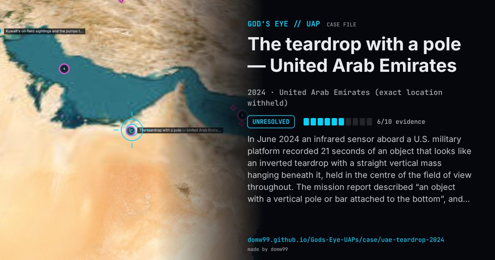

The teardrop with a pole — United Arab Emirates

In June 2024 an infrared sensor aboard a U.S. military platform recorded 21 seconds of an object that looks like an inverted teardrop with a straight vertical mass hanging beneath it, held in the centre of the field of view throughout. The mission report described “an object with a vertical pole or bar attached to the bottom”, and the observer noted that it might be a reflection of something in the water. The video was reported to AARO and released on DVIDS in May 2026 as DOW-UAP-PR29, without a determination.
Explanation
AARO released it in 2026 as unresolved. The mission report (DoW-UAP-D8) describes an object with a vertical pole or bar under it, and the observer added that it might instead be a reflection from an object in the water.
What was seen
Shape: An inverted teardrop with a vertical bar or pole hanging below it
Witnesses: The sensor operator of a U.S. military platform
Duration: 21 seconds of video
Sources
Browse
- 2020s
- Unresolved
- Photo and video cases
- Official government documents
- Video footage
- Infrared or other sensor data